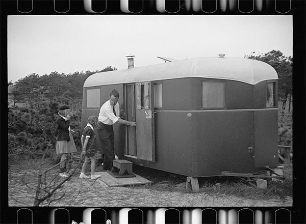
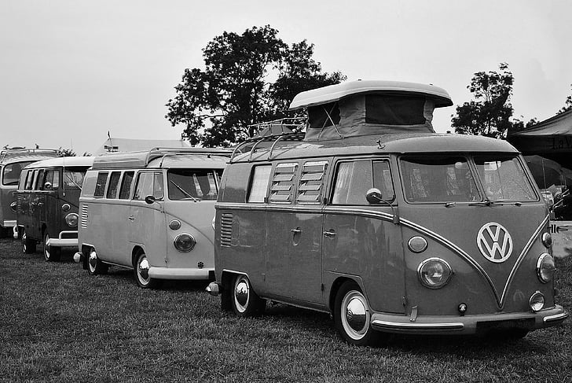
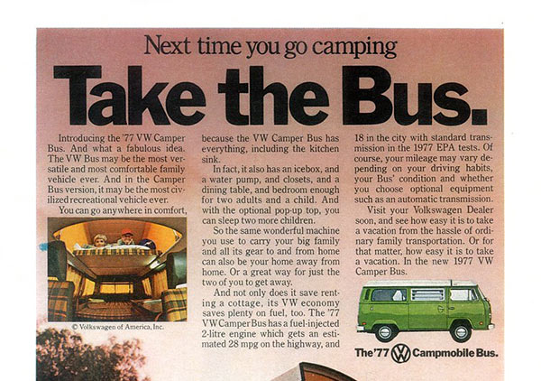
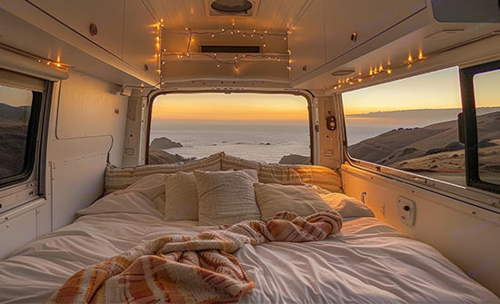

-
The History of Van Life
-
1930s
The Great Depression
Amid the economic hardship of the Great Depression, house trailers became widely adopted as mobile homes, offering displaced families an affordable way to live and travel. This era marked the beginning of mass-produced mobile living.
- 
-
1950s
The Hippie Trails
Admist the civil rights movement, the countercultural Hippie Trail celebrated freedom and exploration through Asia and Europe. This movement laid the groundwork for modern vanlife ideals of adventure and alternative living.
- 
-
1970s
The Volkswagen Bus
The Volkswagen Type 2, known as the VW Bus, became synonymous with the counterculture movement of the 1960s and 1970s. Its spacious design and affordability made it a popular choice for travelers and van dwellers.
- 
-
2010s
#VanLife
In the 2010s, the #VanLife trend gained momentum on social media, showcasing minimalist, nomadic living. Platforms like Instagram featured individuals converting vans into mobile homes, inspiring a new generation to embrace life on the road.
- 